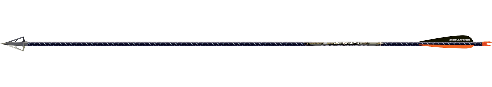

Archery is the art, sport, practice, or skill of using a bow to shoot arrows.
The word comes from the Latin arcus for bow.
Historically, archery has been used for hunting and combat. In modern times, it is mainly a competitive sport and recreational activity. A person who participates in archery is typically called an archer or a bowman, and a person who is fond of or an expert at archery is sometimes called a toxophilite or a marksman.